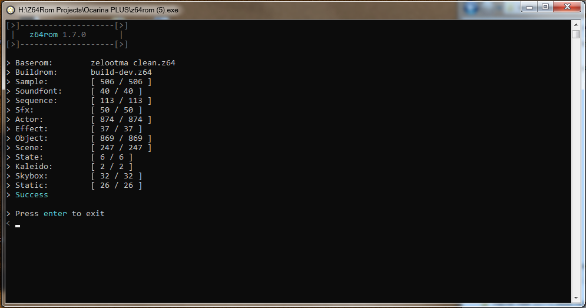
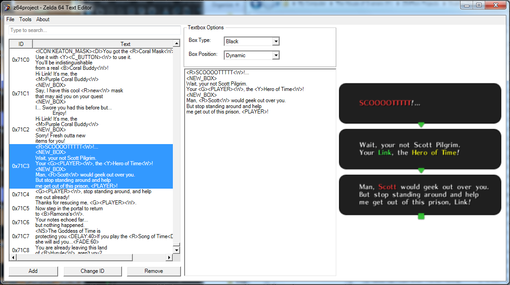
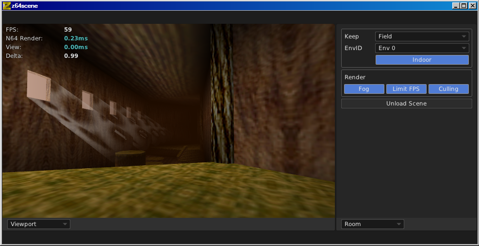

Zelda64 Tools
For legacy tools, click here
Hylian Toolbox
Model viewer for Z64 Models/Maps.
Can import custom display list. Not recommended

z64rom
Successor to zzrt/l.
Workflow can consist of both binary and c code.

Zelda64 Text Editor
Modern text-based editor for both Z64 games.
Supports both binary and decomp.
Z64Convert
Conversion for the N64 Zelda titles.
Converts objex2 files into f3dex2 zobj files
So small, it fits on your favorite superdisk!
Z64Playas
Play-as Tool for the N64 Zelda titles.
Writes you custom link file to rom/zzrt/zzrtl project
Fits on your favorite zipdisk
ZZTexview
Texture tool for N64 titles
Lets you view textures in uncompressed N64 Titles
Fits on your favorite zipdisk

Z64Scene
Map Render for Z64 Games
Was ment to be a editor/builder for maps